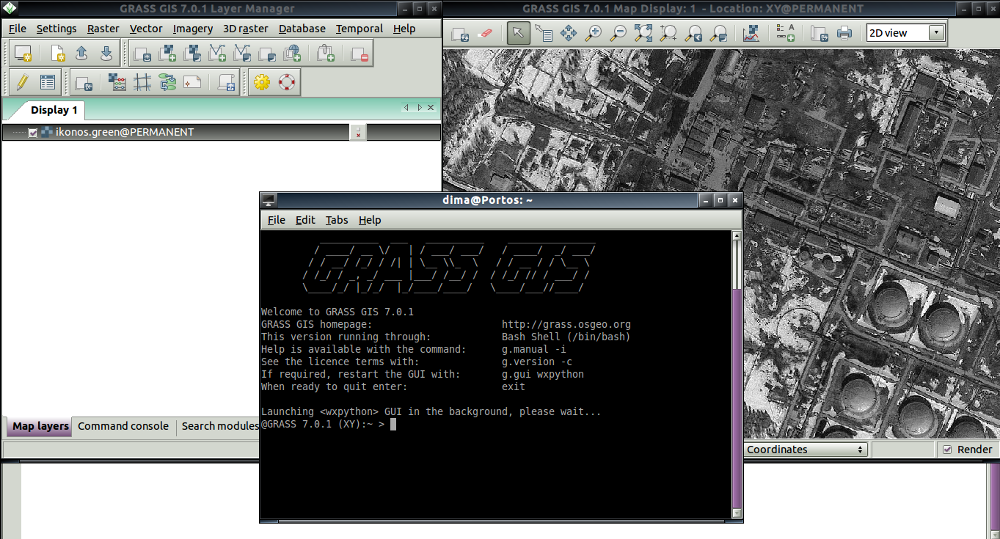

class: center, middle # Автоматизация задач в GRASS GIS ### Колесов Д., Мурый А. --- # Содержание 1. Обзор графического интерфейса 2. Знакомство с командами GRASS 3. Простейшая циклическая обработка 4. Последовательность команд == скрипт 5. Создание модулей GRASS 6. Параллелизация "для бедных" --- # Графичекий интерфейс пользователя .center[] 1. Окно терминала (консоль). Активно используется при работе с коммандной строкой, особенно под ОС Linux, MacOS. 2. Окно менеджера слоев: * Дерево слоев. * Командная консоль ("бедная"). * Поиск модулей. * Интерпретатор Python. 3. Окно карты. --- # Интерполяция на базе модуля v.surf.rst (Regularized Spline with Tension) Метод сплайнов моделирует поведение гибкой растяжимой пластины, которая закрепляется между точками. ```bash v.surf.rst -c input=name [zcolumn=name] elevation=name aspect=name \ tension=float smooth=float segmax=integer npmin=integer ``` Параметры: * input=name название входной векторной карты с высотами; * zcolumn=name название столбца, в котором хранятся высоты; * elevation=name название выходной растровой карты с высотами; * aspect=name называние выходной растровой карты с экспозицией склонов; * segmax=integer, npmin=integer параметры, контролирующие скорость обработки за счет разбиения области на участки. Пример запуска: ```bash g.region vector=elev_points res=2 v.surf.rst elev_points elev=elev_2m zcol=value aspect=asp_2m segmax=30 npmin=140 r.colors map=asp_2m color=aspect ``` --- # Параметры настройки: tension и smooth Метод сплайнов моделирует поведение гибкой растяжимой пластины, которая закрепляется между точками. * tension (растяжение) параметр моделирует степень растяжения пластины в диапазоне от жесткой пластины до эластичной мембраны. Чем меньше значение параметра, тем тверже считается пластина, соответственно на выходе получаются мало рельефные, "плоские" поверхности. Соответственно в местах резкого изменения высот низкие значения параметра излишне сглаживают рельеф. Высокие значения параметра приводят к созданию эластичной резиновой мембраны, и в результате каждая точка "вытягивает" эту мембрану в свою сторону и вокруг точек появляются локальные "пики" или "ямы". * smooth (гладкость) параметр можно представить как пружины, прицепленные к каждой точке, которые "тянут" пластину к себе. Чем больше значение параметра, тем "мягче" пружина и тем большее допустимое отклонение пластины от точек. Чем меньше параметр, тем сильнее пружина, и при нулевом значении параметра пластина пройдет точно через точку. (GRASS позволяет задать каждой точке свое значение smooth)